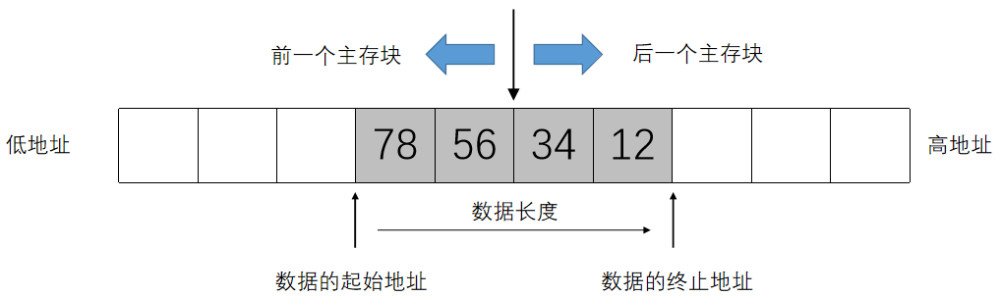

PA3-1 note
✍ 1635 words | 🐛 87 codelines | ⏰ 7 min read | Enjoy 🎶
Intro
在 NEMU 中实现一个 cache，程序在访问主存之前，先尝试访问 cache 块中的内容看有没有匹配的内容。可以形象化的理解为：
Before PA3-1: 每次需要某个文具时，从一个大铅笔盒中取出一个文具
After PA3-1: 先将常用的文具拿出来放在写字台上，每次需要某个文具时，先看看桌上有没有所需的文具，如果找不到再搜铅笔盒
显然从桌上取文具的速度比从铅笔盒中取文具的速度更快，但是桌上不能放很多的文具，正如 cache 不能存储很多数据一样。这时候根据程序访问地址的局部性原理（locality），我们有：
- 时间局部性：一个内存区间在第一次被访问后，短时间内可能会被再次访问
- 空间局部性：一个内存区间在第一次被访问后，其周围的内存区间接下来可能会被访问
我们根据上述原理选择存入 cache 中的内容
下面这个例子中，
i和n满足时间局部性，arr满足空间局部性：
for(int i = 0; i < n; i++){ cin >> arr[i]; }如果我们将上面的变量提前保存到 cache 中，不难发现数组读入的速率会加快很多
策略选择
Cache和主存之间交换数据的基本单元在主存中称为块（block），而在Cache中则称为行（line）或槽（slot），在 NEMU 中其实都是 64B 的空间
交换数据时，我们有下面的四个问题，以及 PA 选择的方案：
1- 主存中的块与Cache中的槽如何对应？在这里就要考虑到查找的效率和Cache存储空间使用效率的权衡。于是就产生了直接映射、全相联映射和组相联映射这三种方式；
在这里我们选择组相联映射（采用 8-way 组相联）
▲ 直接映射指的是将 cache 槽直接与主存块进行一定的对应，每个块用的槽是特定的
类比简易哈希表，优点是查找快；缺点是易冲突，缓存命中率可能不高
▲ 全相联映射指的是 cache 槽可以被任意主存块映射，“是坑就占”，采用标记字段判断槽中的数据是否存在
优点是冲突小，缓存命中率较高；缺点是硬件实现复杂，查找速度慢（每个标记字段都要确认）
▲ 组相联映射是上述的结合：cache 被分成若干组，每组有若干个槽。主存中的块与 cache 组有特定的对应关系，但是 cache 组内可以随意映射
优点和缺点参考前两条
2- 当新访问的主存块映射到Cache中已经被占用的槽时怎么办？于是便产生了不同的替换策略如先进先出、最近最少用、最不经常用和随机替换算法等；
为了简化实现，采用随机替换
很好理解，其中随机替换最容易实现，其不需要额外维护任何信息
3- 当Cache槽中的数据和主存对应块的数据产生不一致时怎么办？这种不一致只会由对Cache的写操作引起，于是针对写操作的不同处理方法就形成了全写法和回写法两类方法。
选择全写法，更新 cache 槽的同时也一并写入主存
相比之下，回写法在更新 cache 槽后进行脏位标记，暂时不写入主存；当 cache 槽需要被替换时，在替换前（如果有脏位标记）将数据写入主存
4- 写操作时Cache缺失时怎么处理？根据是否将内存块调入Cache就形成了包括写分配法和非写分配法两种基本的策略。
选择非写分配法，也就是说写缺失时不把内存块写入 cache 中，只写入主存，一句话解释就是：cache 只为读操作优化。这一思路考虑 “写操作后很少会接着进行读操作”
相比之下，写分配法在写缺失时把内存块写入 cache 中，在 cache 块中更新数据，然后根据之前选择的写操作处理方法对主存进行处理
cache 内存设计
在 NEMU 中 cache 采用 8-way set associative：cache 的槽数为 64KB / 64B = 1024，每个组分配 8 个槽，总共有 1024 / 8 = 128 个组
1 2 3 4 | |
对于每个 cache 槽划分其结构：
1 2 3 4 5 | |
然后定义一个全局 cache 数组：cacheSlot cache[SET_CNT][WAY_CNT];
这就是 cache 的实现，现在我们需要将主存中的块与 cache 中的槽进行对应
在 cache 的实现中，我们进行操作的是物理地址（硬件角度）而不是虚拟地址（程序角度），在 cache 设计时，物理地址被分为三个部分：
1 2 | |
-
set部分，其确定了应该在 cache 的哪个组中进行查找，位长度由 cache 的组数决定。这里 cache 被分为 $2^7$ 个组，因此需要 $7$ 位 -
tag部分，这部分内容会和实际 data 一并存入 cache 中，用于在set确认组后准确定位 -
offset部分，用于在找到对应的槽后，利用偏移值找到具体需要使用的数据，位长度由 cache 块大小决定。这里每个块大小为 $2^6 \text{ Byte}$，因此需要 $6$ 位
（tag 是地址减去 set 和 offset 的部分剩下的部分，其长度没有硬性规定）
如何从物理地址定位到 cache 的内容？先根据 set 定位 cache[set]，再结合 tag 定位到 cache[set][way]，最后利用 offset 定位到 cache[set][way].data[offset]
cache 函数实现
首先对 cache 初始化：
1 2 3 4 5 6 7 8 9 10 11 | |
实现 cache 读操作，根据之前的策略选择不难得到这样的框架：
1 2 3 4 5 6 7 8 9 10 11 12 13 14 15 16 17 18 19 20 21 22 23 | |
以及对应的 cache 写操作
1 2 3 4 5 6 7 8 9 10 11 12 13 14 15 16 17 18 19 20 21 | |
一些子函数这里就不给出具体实现了，在理解物理内存之后不难写出
cache 数据跨块的处理
如果你直接按照上面的模板实现，你会收获一个 Segmentation Fault，因为目前的实现并没有处理下图中的情况（摘自课程课件）：

这里对于读操作给出一个方案：把数据拆分为两部分进行读操作（这里用一层递归简化了代码），最后通过位运算进行合并
1 2 3 4 5 6 7 8 9 10 11 12 13 14 15 16 17 18 | |
写操作同理，代码略